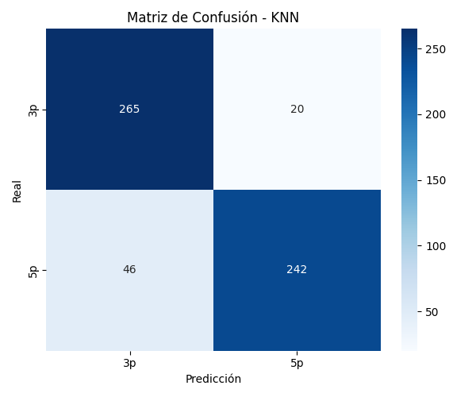

Clasificación binaria de hojas de 3 y 5 puntas usando KNN
Se desarrolló un clasificador de imágenes de hojas para distinguir entre hojas de 3 puntas y 5 puntas. Se aplicó el modelo KNN, se entrenó con imágenes preprocesadas, se generaron métricas de evaluación y gráficas interpretativas.
KNeighborsClassifier para predecir la clase de nuevas hojas.k.Representa el número de hojas clasificadas correctamente e incorrectamente como de 3 o 5 puntas.
Se evalúa el rendimiento del modelo para diferentes valores de K (número de vecinos en KNN).
Este laboratorio permitió entender cómo se aplica un modelo KNN para clasificar imágenes, cómo preprocesar los datos correctamente, evaluar el desempeño y visualizar los resultados para mejorar el modelo.
El siguiente bloque incluye el código fuente completo del experimento.
import os
import cv2
import numpy as np
import matplotlib.pyplot as plt
import seaborn as sns
import pandas as pd
from sklearn.model_selection import train_test_split
from sklearn.neighbors import KNeighborsClassifier
from sklearn.metrics import classification_report, confusion_matrix, accuracy_score
# Configuración
data_dir = 'Leaves/'
output_dir = './'
img_size = (64, 64)
X = []
y = []
image_names = []
files = sorted([f for f in os.listdir(data_dir) if f.lower().endswith(('.jpg', '.png'))])
total_imgs = len(files)
for idx, file in enumerate(files):
img = cv2.imread(os.path.join(data_dir, file), cv2.IMREAD_GRAYSCALE)
if img is not None:
resized = cv2.resize(img, img_size)
X.append(resized.flatten())
y.append('3p' if idx < total_imgs // 2 else '5p')
image_names.append(file)
X = np.array(X)
y = np.array(y)
# Entrenamiento y evaluación
X_train, X_test, y_train, y_test = train_test_split(X, y, test_size=0.3, random_state=42)
knn = KNeighborsClassifier(n_neighbors=3)
knn.fit(X_train, y_train)
y_pred = knn.predict(X_test)
# Reportes
print(classification_report(y_test, y_pred))
# Matriz de confusión
conf_mat = confusion_matrix(y_test, y_pred)
sns.heatmap(conf_mat, annot=True, fmt='d', cmap='Blues')
plt.title("Matriz de Confusión")
plt.savefig("matriz_confusion_knn.png")
plt.close()
# Precisión vs K
accuracies = []
k_values = list(range(1, 10))
for k in k_values:
model = KNeighborsClassifier(n_neighbors=k)
model.fit(X_train, y_train)
acc = accuracy_score(y_test, model.predict(X_test))
accuracies.append(acc)
plt.plot(k_values, accuracies, marker='o')
plt.title("Precisión vs K")
plt.xlabel("K")
plt.ylabel("Precisión")
plt.grid(True)
plt.savefig("precision_vs_k.png")
plt.close()
# Guardar resultados
pd.DataFrame({
"Imagen": image_names[-len(y_test):],
"Etiqueta Real": y_test,
"Predicción": y_pred
}).to_csv("predicciones_knn.csv", index=False)